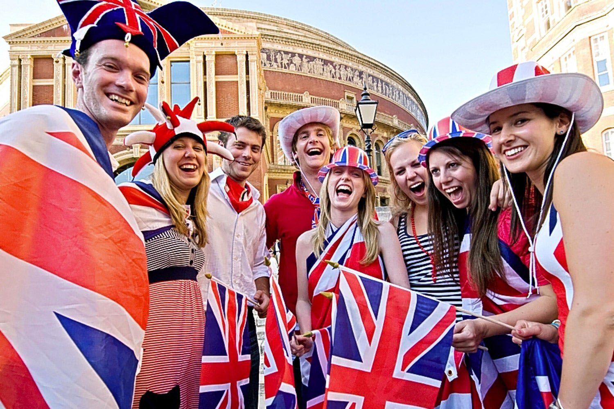
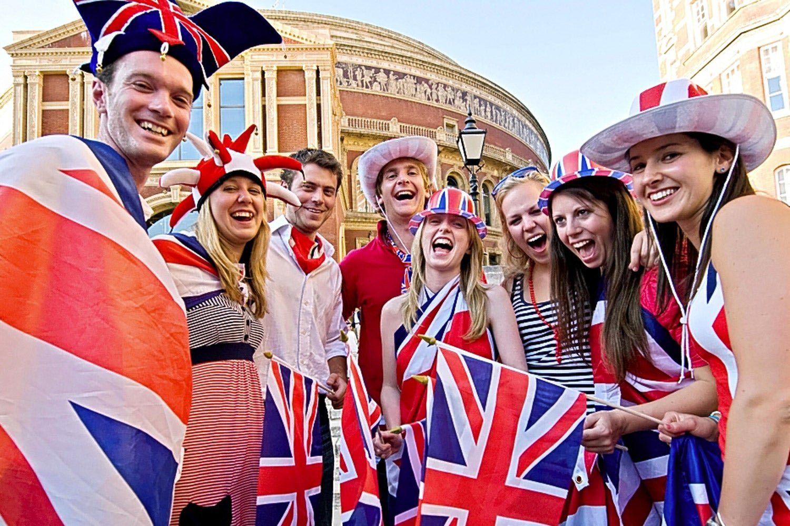

Англичане
Англичане
Англичане представляют собой этногруппу, населяющую Англию. Это административная часть Соединенного Королевства Великобритании и Северной Ирландии. Жители Англии составляют подавляющее большинство населения Великобритании (около 85%). Английские традиции и культура имеют многовековую историю. В Лондоне — столице Англии — множество архитектурных памятников, являющихся культурным наследием нации.
Общее количество человек, считающих себя англичанами, составляет около 50 000 000. При этом нужно указать, что жители других стран, например, США, Канады, Австралии и еще некоторых имеют этническое английское происхождение. Это означает, что их предки родом из Великобритании. Всего их насчитывается около 110 млн человек. Они ассимилировались с местным населением и приняли другое гражданство.
Англичан принято считать домоседами. Это люди, предпочитающие проводить тихие вечера в кругу семьи. Практически все коренное население проживает в частных домах. Жилье снимают преимущественно приезжие. Ввиду дороговизны коммунальных услуг вода и электричество расходуются крайне экономно. Комнаты отапливают лишь несколько часов в день, утром и вечером. Поэтому дома ходят в теплых кофтах, носках. Необычным фактом, который может потрясти любого иностранца, является то, что водопроводные краны не имеют смесителей. Для того, чтобы умыться, необходимо заткнуть пробкой раковину и набрать воду в нее воду. Англичане не любят стоять в очередях. За едой ездят раз в неделю, покупая продукты на несколько дней вперед. Также не принято тратить много времени на приготовление пищи. Многие используют замороженные полуфабрикаты, что позволяет экономить время. Как и во многих странах Европы, в Англии ценятся экологически чистые продукты, изготовленные на частных фермах. Их стоимость значительно выше, чем та, что у еды, обработанной на фабриках. Еще одна черта, отличающая англичан от других народов, любовь к домашним животным. Жители Англии обожают держать дома собак, кошек, птичек и т.п. За питомцами ухаживают, тратя на это максимум средств и времени. В Англии есть парикмахерские, маникюрные салоны, тренажерные залы для собак. Нормальным явлением считается приобретать для домашнего животного дорогие аксессуары, одежду, украшения.